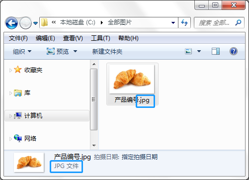
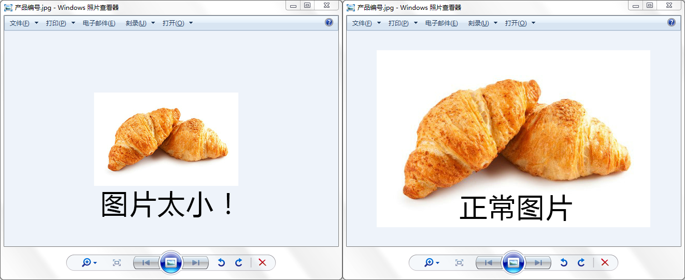

FreeX 使用帮助
2018-01 FreeX
第一次使用 FreeX 叫货程序, 应该怎么使用? 看完下列教程, 您就明白了.
基础教程
1. 上传产品
首先, 您需要上传产品, 分类 和 图片. 这样业务员的平板才有产品可以提供给客户点货.
点击查看上传产品教程
2. 业务员和设备
有了产品怎么能少得了业务员呢, 下面的教程教您如何添加业务员以及授权给业务员的设备.
点击查看授权教程
3. 业务员下载APP
业务员不会下载APP? 放心, 根据下面的教程, 您可以了解到如何下载FreeX叫货APP.
点击查看下载APP教程
4. 产品批量导入
业务增长后, 产品数据庞大, 如何快速修改数据成为重点! 下面教程教您如何批量导入产品数据.
点击查看下载APP教程
使用时遇到问题
1. 全部图片里面有图片 但是picasa-图片排序 找不到图片
检查图片的格式, 必须是JPG格式(如下图蓝色区域所示)

发现格式不对怎么办? 跟着下列步骤, 修改图片格式
您所需要的是美图秀秀批量修改
点击查看修改格式教程
还是找不到图片怎么办? 检查图片像素是否太小!
双击打开图片, 如果图片还是很小, 这种情况您该考虑换一张大一些的图片了.

2. picasa-图片排序 按F2没反应
重新启动一下程序, 看看是否能正常使用.
ipad服务器和销售管理必须开着
按F2还是没反应, 可能是被杀毒删掉某个程序文件了.
请联系客服恢复文件.